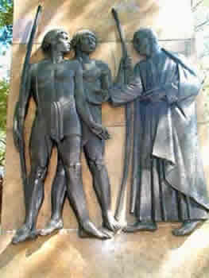
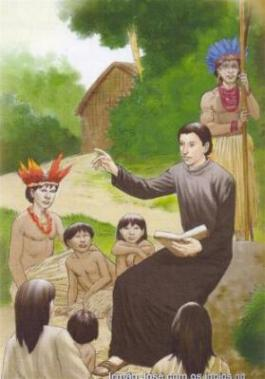
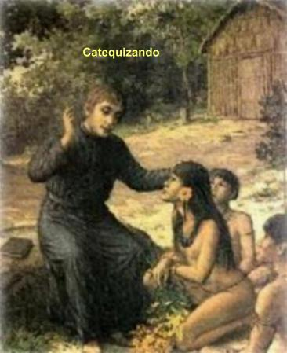
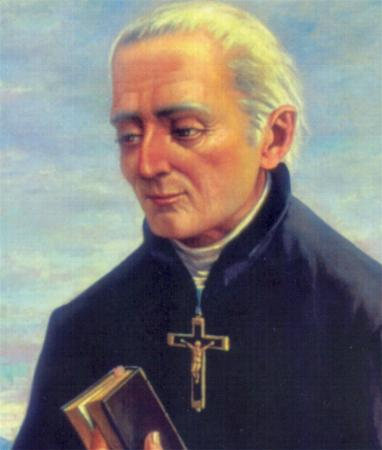
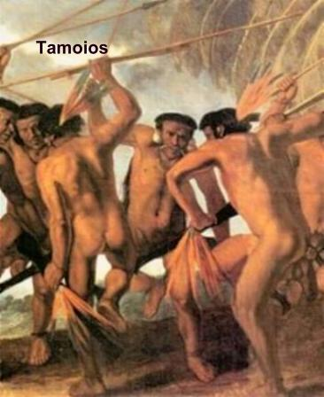
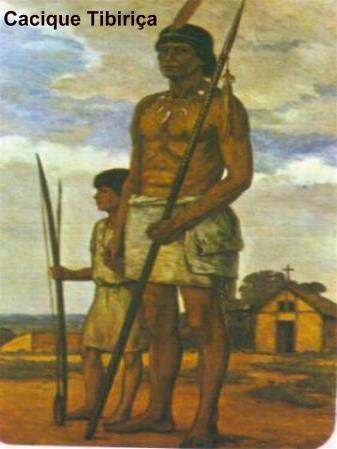
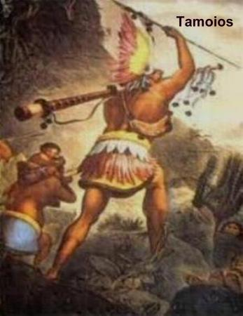

NASCIMENTO
VINDA AO BRASIL
FAMÍLIA E IDEAL
CRISTÃO
José de Anchieta nasceu no dia 19 de março de 1534, em San
Cristobal de La Laguna, ilha de Tenerife do Arquipélago das Canárias,
que pertence à Espanha. Seu pai João Lopez de Anchieta, era natural da Província
de Guipuscoa no Vale Urrestilha, na Espanha, homem forte, revolucionário, tomou parte
na Rebelião dos Comuneiros contra o Imperador Carlos V, em seu país. Foi condenado
à morte, mas salvou-se por interferência de um parente militar ilustre, o
Capitão Inigo de Loyola (Inácio de Loiola, mais tarde fundador da Companhia de
Jesus). Por precaução, mudou-se para as Canárias. Sua mãe era a senhora Mência
Dias de Clavijo y Llarena, natural das próprias Canárias, era neta de judeus
convertidos ao cristianismo. De uma família de 12 irmãos, foram consagrados mais
dois sacerdotes além do Padre Anchieta: O Padre Pedro Nuñez e Padre Melchior.
Arquipélago das Canárias,
que pertence à Espanha. Seu pai João Lopez de Anchieta, era natural da Província
de Guipuscoa no Vale Urrestilha, na Espanha, homem forte, revolucionário, tomou parte
na Rebelião dos Comuneiros contra o Imperador Carlos V, em seu país. Foi condenado
à morte, mas salvou-se por interferência de um parente militar ilustre, o
Capitão Inigo de Loyola (Inácio de Loiola, mais tarde fundador da Companhia de
Jesus). Por precaução, mudou-se para as Canárias. Sua mãe era a senhora Mência
Dias de Clavijo y Llarena, natural das próprias Canárias, era neta de judeus
convertidos ao cristianismo. De uma família de 12 irmãos, foram consagrados mais
dois sacerdotes além do Padre Anchieta: O Padre Pedro Nuñez e Padre Melchior.
Os seus estudos iniciais e o aprendizado de latim foram realizados
nas Canárias, oportunidade em que revelou empenho e disposição para
aprender. Quando completou 14 anos de idade, em companhia de seu irmão mais
velho Pedro Nuñez, pela vontade de seus pais, foi para Portugal a fim de
continuar os estudos no Real Colégio das Artes em Coimbra, onde estudou
humanidades e filosofia. E novamente, se destacou, mostrando excelente aplicação
nos estudos, falando fluentemente o português sem o sotaque espanhol e com
facilidade, fazia versos em latim, o que lhe valeu o apelido de “Canário
de Coimbra”.
Além de estudante competente, adquiriu o bom hábito de rezar
todos os dias, devotando um grande amor a JESUS e a MARIA SANTÍSSIMA, que o
estimulou a cultivar com seriedade e afeição o caminho da religião.
Em 1551, aos 17 anos de idade, com a autorização e bênção dos
pais, entrou no Seminário da Companhia de Jesus, em Coimbra. Mas, com pouco
tempo de Seminário, adoeceu com tuberculose óssea, de difícil tratamento naquela
época e que ocasionava uma terrível dor nas costas. Com 18 anos de idade a sua
coluna vertebral estava tão curvada que fazia um “S”. Mas com esforço, continuava cumprindo
todos os seus afazeres, e até brincava com sua própria
infelicidade: “A natureza
me preparou para carregar fardos”.
Como vinham para o Brasil muitos missionários com o objetivo de
trabalhar na evangelização dos índios, os médicos também concordaram que o clima
ameno brasileiro poderia suavizar os efeitos da doença, e por essa razão,
recomendaram aos Superiores dos Jesuítas, a sua vinda para cá, pois aqui até
poderia ficar curado.
A VIAGEM
Assim, em 1553, depois de ter pronunciado os primeiros votos
religiosos no dia 8 de Maio, o Irmão José, como passou a ser chamado, veio para
o nosso país na terceira expedição jesuíta, chefiada pelo Padre Luiz de Grã.
Era o dia 13 de julho
de 1553, quando Anchieta chegou ao Brasil, ao "paraíso terrestre",
como descreviam os historiadores contemporâneos do padre. A Terra de Santa Cruz
podia ser considerada um sanatório onde aportavam doentes com tuberculose, varíola
e outras doenças contagiosas. Anchieta com 19 anos de idade era o mais jovem dos jesuítas
na esquadra do Governador Duarte da Costa, segundo Governador Geral do Brasil. A saúde do
noviço jesuíta melhorou sensivelmente durante a viagem, e quando desceu em Salvador, na
Bahia, dois meses depois de uma viagem pelo mar, estava praticamente curado.
E se mostrava entusiasmado com a imensa missão que o aguardava.
Mas permaneceu pouco tempo na capital baiana, porque logo veio à ordem do
Superior dos Jesuítas no Brasil, Padre Manuel da Nóbrega, distribuindo os
jesuítas pelas diversas escolas e designando o Irmão José de Anchieta e outros,
a seguir com o Padre Leonardo Nunes para São Vicente, (hoje no Estado de São
Paulo).
CONSTRUINDO PARA CATEQUIZAR
Foi nesta Vila onde começou de fato a sua missão entre nós. Sob a
chefia do Padre Manuel de Paiva, os Jesuítas subiram a serra do Mar e chegaram
ao planalto a fim de fundar e dirigir o Colégio Piratininga. Em carta que
escreveu em 1554, ao Superior da Ordem Jesuíta Ignácio de Loyola, ele disse:
"Aqui fizemos
uma casinha pequena de palha, e a porta estreita de cana. As camas são redes que
os índios costuraram; os cobertores para aquecer, o fogo, para o qual, acabada a lição à tarde,
vamos buscar lenha no mato e a trazemos às costas, para passarmos a noite. A
roupa é pouca e pobre, sem meias ou sapato, no pé as vezes usamos pano de algodão... A comida vem
dos índios, que nos dão alguma esmola de farinha e algumas vezes, mas raramente,
alguns peixinhos do rio e mais raramente ainda, alguma caça do mato."
 Com esforço e dedicação e ajudado pelo português João Ramalho e
pelo cacique Tibiriçá, construíram uma cabana de “pau a pique” (em que as
paredes são feitas com bambus entrelaçados, e os vãos, e de ambos os lados,
cheios com barro) com aproximadamente 90 metros quadrados de área. A choupana
foi inaugurada no dia 25 de Janeiro de 1554, data em que se comemora a conversão
do Apóstolo Paulo. Por essa razão foi denominado Colégio de São Paulo de
Piratininga, onde é hoje o “pátio do Colégio”, e dessa forma,
nasceu à cidade de São Paulo. Para marcar a solenidade, o Padre Manuel de Paiva
celebrou no local uma Santa Missa, auxiliado pelos outros Jesuítas recém
chegados, inclusive o Irmão José de Anchieta.
Com esforço e dedicação e ajudado pelo português João Ramalho e
pelo cacique Tibiriçá, construíram uma cabana de “pau a pique” (em que as
paredes são feitas com bambus entrelaçados, e os vãos, e de ambos os lados,
cheios com barro) com aproximadamente 90 metros quadrados de área. A choupana
foi inaugurada no dia 25 de Janeiro de 1554, data em que se comemora a conversão
do Apóstolo Paulo. Por essa razão foi denominado Colégio de São Paulo de
Piratininga, onde é hoje o “pátio do Colégio”, e dessa forma,
nasceu à cidade de São Paulo. Para marcar a solenidade, o Padre Manuel de Paiva
celebrou no local uma Santa Missa, auxiliado pelos outros Jesuítas recém
chegados, inclusive o Irmão José de Anchieta.
Naqueles anos do início foi muito difícil, e o barracão servia de
dormitório, enfermaria, de colégio, refeitório, cozinha e até de Capela, onde
eram celebradas as Missas.
Ao redor do colégio dos padres, logo foi sendo edificada a
povoação, surgindo outros barracões, onde foram instaladas oficinas de
carpintaria, sapataria, etc., e tudo de pau-a-pique e sapé.
Durante dez anos Anchieta ensinou aos índios, aos filhos dos
colonos e aos Noviços da Companhia de Jesus. Como não havia livros ele preparava
e copiava as lições, de modo a atender eficientemente a todos os seus alunos.
Assim, com boa vontade, superava a natural carência dos recursos necessários ao
exercício do magistério. Aprendeu a língua “tupi” e como mestre de
gramática começou a estudar a língua falada pelos índios, porque percebeu que os
idiomas das diversas tribos indígenas tinham a mesma base linguística. Desse
modo, com impressionante empenho, unificou todos aqueles idiomas num único
dialeto, o “tupi”, elaborando um “Livro de Gramática da Língua mais
falada na Costa do Brasil” (o tupi) com seus princípios e regras. Esta
providência ajudou de maneira considerável a comunicação entre os missionários e
os nativos, e primordialmente, na catequese.
Também compôs um “Catecismo” simples e objetivo, sob a
forma de diálogo, para ensinar e educar os índios nos principais Mistérios da Fé
Cristã, sem violentar as tradicionais crenças indígenas, mas amoldando o seu
conteúdo a Verdade Cristã.
Estas duas obras, na época foram impressas em Portugal,
e representaram um auxílio inestimável a todas as Missões Jesuíticas no Brasil.
Irmão José era incansável, onde se encontrasse, sempre estava
disponível para atender uma solicitação ou agilizar alguma providência. Ele se
desempenhou de maneira eficiente e brilhante, na função de professor, músico,
enfermeiro, sapateiro, taumaturgo, construtor, conselheiro espiritual, e em
muitas outras atividades.
PERSEGUIÇÃO E CAPTURA DE ÍNDIOS
Na época, o pensamento europeu, de um modo geral, era totalmente
contra a evangelização e educação dos
índios, que por muitos eram até
considerados sem alma. Vinham embarcações que aportavam as costas brasileiras e
transportavam os índios para o trabalho escravo ao longo do continente. Então,
os missionários jesuítas, tiveram que alimentar uma tenaz luta pela liberdade e
dignidade dos povos indígenas, não só por exigência da própria consciência
cristã, mas também porque a posição oficial da Igreja era a favor da igualdade
de todos e contra a escravização do homem. Esta realidade tornou-se pública
através do documento de Sua Santidade, o Papa Paulo III, a bula “Sublimis
Deus”, editada em 1537, que considera todas as raças iguais, inclusive os
índios, em face da Redenção do SENHOR.
Numa ocasião, Irmão José fazia uma pregação na cidade de Santos,
quando subitamente interrompeu as suas palavras, porque pelo dom da profecia
teve a visão de uma expedição que capturava índios no interior de Santa
Catarina. Ele revoltado, falou:
“Eu sou o cão da casa do SENHOR
(sempre vigilante), não hei deixar
de ladrar. Digo-vos, da parte de DEUS, que não deixem sair deste porto uns dois navios,
que estão (para transportar índios) para fazer viagem aos Patos, índios que estão de
paz conosco e são nossos amigos, (e estão)
a cativá-los com suas costumadas e injustas
traças (armadilhas) . De outra sorte hão de ver, o que forem (aqueles predadores), a ira de DEUS sobre si, e hão de morrer miseravelmente”.
Mesmo sendo sabedores da
advertência do Santo, os terríveis caçadores zarparam com seus navios. Mas
havia certo ambiente de intranquilidade dentro das duas embarcações e este fato
logo veio ao conhecimento de todos, quando alguns dias depois da partida, um dos
homens importantes da expedição, acordou aos gritos. Ele teve um pesadelo, em
que se sentia arrastado para o inferno. O demônio com estridentes gargalhadas se
apoderava dele. Arrependido de tomar parte naquela expedição convenceu os seus
companheiros a voltar e deixá-lo no porto.
Ele ficou e, as duas
caravelas seguiram viagem, mas não alcançaram o seu destino. Uma terrível tempestade
varreu furiosamente as embarcações, e com exceção de dois tripulantes, todos
morreram no naufrágio.
UMA CATEQUESE
DIFERENTE 
Irmão José de Anchieta, Padre
Manuel da Nóbrega e outros missionários jesuítas praticavam a catequese de uma
maneira bem agradável e cativante, com canto, poesia e teatro. Na verdade, a
iniciativa começou com Anchieta compondo diversos autos, que eram encenados com
grande entusiasmo e alegria pelos índios e colonos. E as apresentações eram tão
bem feitas e agradavam tanto, que se repetiam em diversos povoados, como São
Vicente, Rio de Janeiro, Niterói, Pernambuco e Bahia, com jubilosa participação.
E é interessante realçar que o
público era muito variado, com diversas origens, e por isso mesmo, os autos eram
escritos nos três idiomas: tupi, português e espanhol, a fim de que todos
ouvissem e entendessem as apresentações. Irmão José, inspirado pelo ESPÍRITO
SANTO, procurava cativar os índios com a intenção de favorecer o entendimento da
mensagem cristã. E para alcançar este objetivo, ele incluía nos autos alguns
elementos da cultura indígena, mesclando personagens nativas com personalidades
da tradição católica.
PREGADOR QUE
SABIA CATIVAR
Ele sempre foi obediente as
ordens de seus superiores, as quais cumpria integralmente com perfeição. A
única coisa da qual procurava fugir era quando, em algumas ocasiões o Superior Padre
Manuel da Nóbrega o mandava subir ao púlpito para fazer uma pregação. Isto
porque, não sendo sacerdote, não se julgava com autoridade para realizar uma
tarefa tão sublime.
Todavia, aconteceu que numa
Semana Santa, Padre Nóbrega adoeceu, e Irmão José de Anchieta teve que
substituí-lo. Assumindo a responsabilidade com dignidade, ajoelhou-se diante do
altar da VIRGEM e pediu inspiração. Subiu ao púlpito e com muita serenidade e
vigor, fez um magnífico sermão, deixando os fiéis emocionados e com lágrimas nos
olhos. No dia seguinte, Padre Nóbrega com um sorriso paterno e muito carinho,
lhe falou: “Haveis de
dar conta a DEUS porque não quisestes pregar até agora”. (reconhecia nele o notável dom da
oratória)







 Próxima Página
Próxima Página
Página Anterior
Retorna ao Índice